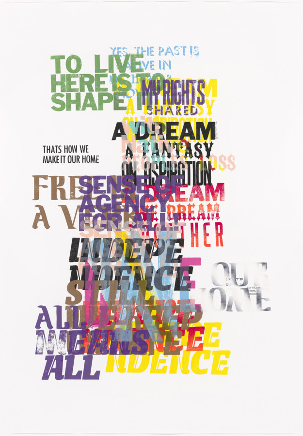

Vida Sačić: Self-Evident
Join us for a talk by Chicago-based artist Vida Sačić on her work as a visual artist, educator, and the ways she grounds her work in lived experience.
Hear about her installation, Self-Evident: A Letterpress Exploration of the Declaration of Independence, currently on view at the Museum, which features immigrant responses to language drawn from the Declaration of Independence. She will discuss the project’s conceptual framework and material processes, exploring how letterpress printing, historical typography, and contemporary voices intersect in the work. The talk will also reflect on themes of immigration, authorship, collective narrative, and print as both a historical and living medium.
Prior to her talk, be sure to view Self-Evident in our main lobby. This work is the first of four installations in 2026 celebrating US at 250: Civic Action in Chicago featuring works by Chicago artists that respond to four founding documents of the United States: the Declaration of Independence, US Constitution, Northwest Ordinance, and the Thirteenth Amendment.